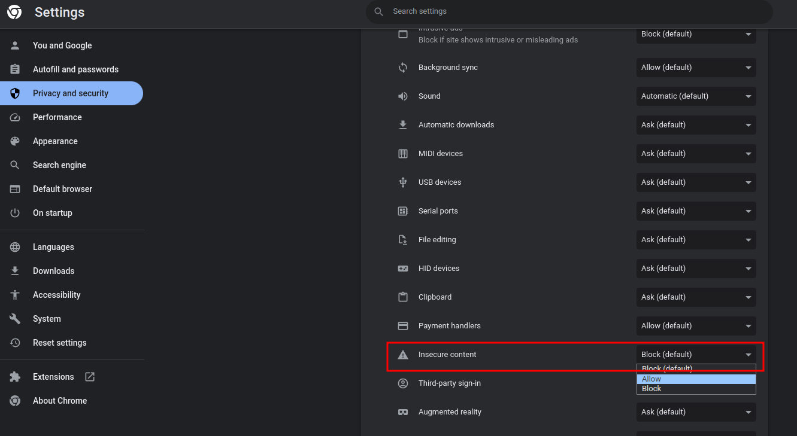

Chrome Console 出現 Mixed Content 訊息
Mixed Content: The page at 'https://www.***.com/' was loaded over HTTPS, but requested an insecure XMLHttpRequest endpoint 'http://192.168.10.200:3000/'.
This request has been blocked; the content must be served over HTTPS.
出現該訊息是因為在 https 頁面內，呼叫 http 協定的 API，基於安全問題，瀏覽器會封鎖該請求。解決方式是把 API 換成 https 即可，但這個 API 是我們放在客戶端存取客戶內部網路的 service，讓客戶在我們網站透過呼叫該 service 存取他們內網資料。
如果要為了這個 service 建立域名、申請 SSL 憑證有點麻煩（我就懶），所以請客戶調整瀏覽器設定，允許不安全內容。

# 相關參考
變更網站設定權限
混合內容